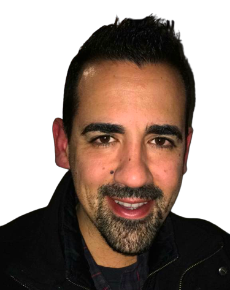

Hello World!

About Me
My name is Nuno Salavessa Mota, born and raised in the beautiful city of Lisbon, Portugal, in the year 1985.
My Passion for Technology
Ever since my childhood, I have been captivated by technology and the incredible potential it holds.
The question of 'how does this work?' has always triggered my curiosity, leading me on a lifelong journey of discovery and learning.
My Hobbies
- 🌠Traveling: Exploring new cultures and landscapes.
- 🏍️ Motorcycle Riding: Nothing compares to the feeling of the open road.
- 🮠Computer Gaming: Engaging with virtual worlds and challenging gameplay.
- 🰠Collecting Medieval Helmet Miniatures: A small tribute to history and craftsmanship.
- 🕹️ Vintage Handheld Consoles: Preserving a slice of gaming history.
Let's Connect!
Feel free to contact me.